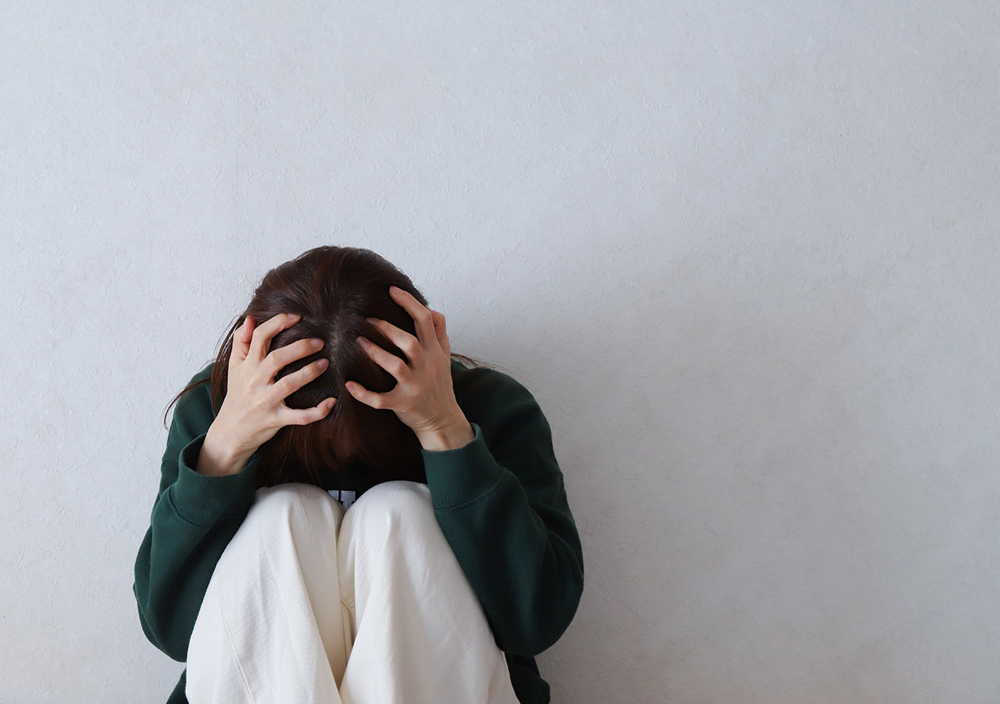
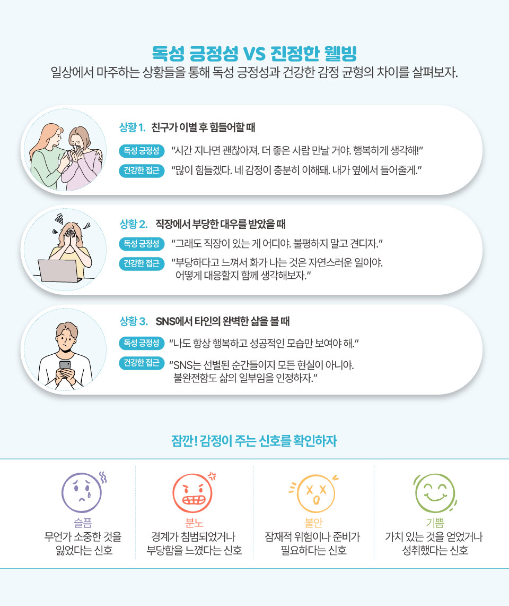

글. 김성민 참고. 산업안전보건연구원, 한국질병관리청, 국립정신건강센터 등의 보고서 및 논문
“괜찮아, 힘내!” “긍정적으로 생각해!” “좋은 생각만 해!”
상사의 갑질에도 미소 지어야 하는 직장, SNS엔 행복한 얼굴만 올려야 하는
일상, 부모님께 걱정 끼치지 않으려 ‘잘 지낸다’고 거짓말하는 우리.
한국인의 27.8%가 정신건강 장애를 경험하지만 치료받는 이는 16%에
불과하다.
‘눈치’와 ‘체면’이라는 문화적 DNA가 만들어낸 감정
억압의 굴레. 집단의 조화를 위해 개인의 아픔을 삼켜야 하는 사회에서,
우리는 진짜 마음을 표현하는 법을 잊어가고 있다. 화병부터 번아웃까지,
억눌린 감정이 만들어낸 한국 사회의 정신건강 지도를 들여다본다.

서구 사회의 독성 긍정성이 개인의 선택과 책임에 초점을 맞춘다면, 한국
사회의 독성 긍정성은 ‘집단적 압력’의 형태로 존재한다. 한국인들은
자신의 부정적 감정이 집단 조화를 해칠 수 있다는 불안감에 시달리며,
이로 인해 감정의 이중 억압 현상이 나타난다. 문화적으로 억압된 감정을
개인이 다시 한번 억눌러야 하는 상황이 만들어지는 것이다.
한국 문화에서 중요한 개념인 ‘눈치’는 독성 긍정성의 핵심 메커니즘으로
작용한다. 타인의 생각과 감정을 읽고 사회적 조화를 유지하기 위해 자신의
행동을 조절하는 이 능력은, 종종 진정한 감정을 숨기고 표면적인 긍정성을
유지해야 한다는 압박으로 이어진다. 더불어 한국의 위계적 사회 구조는
‘갑질’이라는 현상을 통해 독성 긍정성을 더욱 강화한다. 상사에 대한
부정적 감정 표현이 금기시되는 환경에서, 직원들은 불합리한 대우에도
긍정적인 태도를 유지해야 한다는 압박을 받게 된다.
소셜 미디어는 성공, 외모, 행복에 대한 비현실적인 기준을 조성함으로써
한국 사회의 독성 긍정성을 심화시키고 있다. 이런 사회 현상은 특히
Z세대에게 큰 영향을 미치는데, 2023년 한 연구에 따르면 소셜 미디어
플랫폼에서의 독성 긍정성이 ‘*허슬 문화’에 영향을 주고 있다고 분석했다.
또 이를 끊임없는 행복과 생산성에 대한 비현실적인 기대를 만들어내는
원인으로 꼽았다.
이토록 무거운 사회적 압력에 대한 해결책으로는 ‘*마인드풀니스’ 명상이
주목받고 있다. 2024년 서울국제명상엑스포에서는 ‘명상, 나와의
만남’이라는 타이틀로 다양한 프로그램이 운영되었으며, 많은 참가자들이
심리적 안정을 찾기 위해 참여했다. 명상 시장은 전 세계적으로 큰
성장세를 보이고 있으며, 한국에서도 디지털 헬스케어와 결합된 서비스가
확산되는 추세다.
허슬 문화 : 개인의 일상적인
행복보다 직업적인 성공이나 사회적 성과를 더 중시하는 문화
말한다.
마인드풀니스 지금 이순간에 집중해
자신의 생각과 감정, 감각을 깨닫고 있는 그대로 받아들이는 자세
한국에서 독성 긍정성이 정신건강에 미치는 영향은 상당하다. 2021년 국가
정신건강 조사에 따르면, 한국 성인의 27.8%가 생애 어느 시점에서
정신건강 장애를 경험하지만, 우울증 환자 중 약 16%만이 전문적인 치료를
받는 것으로 파악됐다.
독성 긍정성과 전통적인 한국의 감정 개념 사이의 관계는 ‘화병’이라고도
불리는 ‘분노 증후군’과 같은 문화적 증후군으로 이어진다. 2022년
MZ세대를 대상으로한 연구에서는 36.3%의 높은 화병 유병률이
확인되었는데, 이는 일반 인구 유병률(4.2~13.3%)에 비해 크게 높은
수치다.
한국은 2022년 OECD 국가 중 가장 높은 자살률(인구 10만 명당 25.2명)을
기록하고 있으며, OECD 평균(10.6명)의 두 배가 넘는 수치다. 이런 통계는
감정 억압과 독성 긍정성의 위험성을 경고하는 중요한 지표다.
이렇듯 깊게 뿌리내린 문화적 규범에도 불구하고 독성 긍정성에 대한
도전이 서서히 나타나고 있다. 미디어 표현도 변화하고 있으며, ‘K-드라마’
역시 끊임없이 행복을 이상화하기보다 정신건강 문제를 가진 캐릭터를 점점
더 많이 묘사하고 있다.
한국 연예인들도 더 공개적으로 정신건강에 대해 논의하기 시작했다. 최근
박민영 배우는 tvN 드라마 ‘내 남편과 결혼해줘’ 관련 인터뷰에서
“우울증도 마음의 감기라고 하더라고요. 감기 걸렸을 때처럼 약을 먹고
낫는 게 낫다고 생각했어요”라고 밝히며 정신건강의 중요성을 강조했다.
정부 이니셔티브도 이러한 문제에 대한 인식 증가를 반영하고 있다.
2017년에 개정된 정신건강복지법은 정신건강 문제를 가진 개인들을 더 잘
보호하기 위한 조치를 취했고, 2023년 보건복지부는 정신건강 서비스에
대한 예산을 증액했다.
정신건강 전문가들은 더 건강한 감정적 규범을 발전시키기 위한 몇 가지
전략을 제시한다. 특히 기업을 대상으로 진정한 감정과 우려 표현을
정당화하는 정책 구현, 감정노동 요구에 대처하는 데 도움이 되는 자원
제공, 괴롭힘 법 집행 강화에 초점을 맞춘 권고사항을 주문하고 있다. 기업
웰니스 프로그램도 꾸준히 증가하고 있으며, 정신건강 지원을 통해 감정적
웰빙에 초점을 맞추는 추세다.
‘괜찮아’라는 말이 때로는 가장 괜찮지 않은 대답일 수 있다는 사실 을
이제는 인정할 때다. 독성 긍정성에 빠지지 않기 위해서는 모든 감정, 즉
기쁨·슬픔·분노·두려움이 인간 경험의 자연스러운 일부임을 받아들이는
것이 중요하다. 혹시 독성 긍정성의 덫에 빠진 것 같다면, 물 한 모금
마시듯 잠시 멈추고 자신에게 물어보자. “지금 나의 진짜 감정은
무엇일까?”
